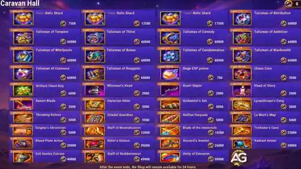
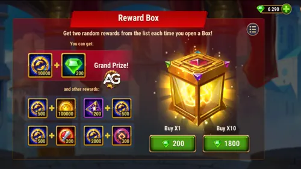

The Caravan Hall is the Trade Routes event shop. During the Fields of Tomorrow season for the new hero Eva, its main exclusive rewards are Iris Relic Shards and a rotating selection of Talismans. These premium items should come before ordinary hero equipment for most players.
Important: the Shop Changes Every Season
The featured hero Relic and the Talismans offered in Caravan Hall rotate with each Trade Routes season. This guide covers the Fields of Tomorrow lineup. Always check the current shop before copying a strategy from an older season.

Alexandre's Quick Buying Strategy
- Iris users: compare the 105,000-Sigil Level 1 Relic route with the 60,000-Sigil Talisman of Erudition before spending.
- F2P players chasing the Relic: the full shop route costs 105,000 Exchange Sigils, so complete every mission and use saved free Emeralds on Reward Boxes only if the remaining gap is realistic.
- Low spenders: combine the first 30 Iris shards with the 20-shard Hub offer instead of paying the expensive second and repeatable Caravan Hall rates.
- Choose one relevant Talisman: buy for a hero in your main team, not simply because the item is exclusive.
- Avoid hero equipment: spend Energy to farm gear and keep Exchange Sigils for Relics and Talismans.
Iris Relic: How to Reach 50 Shards
You need 50 Iris Relic Shards to unlock Relic Level 1, and Iris must be at least four stars. Caravan Hall sells five shards per purchase, but the cost rises after the limited discounted offers are exhausted.
The Third Offer Is Repeatable
The final Iris offer has no stated purchase limit. Each purchase costs 17,500 Exchange Sigils and gives 5 Iris Relic Shards, so two purchases complete the shop-only 50-shard route.
| Offer Tier | Cost per Purchase | Shards | Purchase Limit | Tier Total | Cumulative Total |
|---|---|---|---|---|---|
| First offer | 7,500 Exchange Sigils | 5 | 6/6 | 45,000 Sigils for 30 shards | 30 shards |
| Second offer | 12,500 Exchange Sigils | 5 | 2/2 | 25,000 Sigils for 10 shards | 40 shards for 70,000 Sigils |
| Third offer | 17,500 Exchange Sigils | 5 | Blank (repeatable; no stated limit) | Two purchases cost 35,000 Sigils for 10 shards | 50 shards for 105,000 Sigils |
The shop-only route requires all six first-tier purchases, both second-tier purchases, and two repeatable purchases: 45,000 + 25,000 + 35,000 = 105,000 Exchange Sigils.
F2P Route
Iris's Relic is technically obtainable without spending because the third offer is repeatable. In practice, however, 105,000 Exchange Sigils is a major currency wall. A F2P player must complete the available missions, collect extra Sigils, and usually spend a substantial amount of saved free Emeralds on Reward Boxes to reach 50 shards. Check your remaining gap before committing Emeralds; stopping short of 50 shards does not unlock Relic Level 1.
Best Low-Spender Route
Buy all six 7,500-Sigil offers for 30 Iris Relic Shards, spending 45,000 Exchange Sigils. Then buy the 20-shard Iris bundle in the Hub shop to reach the required 50. This avoids the poor-value 12,500 and 17,500 tiers and leaves more Exchange Sigils available for a Talisman. For most low spenders, this is the strongest balance between event currency and real-money spending.
Unlocking Is Not the Same as Fully Upgrading
The 50-shard target opens Iris's first Relic level. Before spending, confirm that Iris has four stars and that you actively use her. Otherwise, a Talisman for a core hero may improve your account sooner.
Iris Relic Level 1 vs. Talisman of Erudition
Soul Agony, Iris's Level 1 Relic skill, weakens the nearest enemy every 19 seconds and prevents that enemy from using their first skill. The Relic also adds some Magic Attack and Health, but the complete unlock costs 105,000 Exchange Sigils.
The Talisman of Erudition costs 60,000 Exchange Sigils and provides 12,000 Armor plus up to 19,800 Magic Penetration from its three reroll slots. For most PvP Iris builds, it produces more immediate value at a much lower cost. My recommendation is to buy the Talisman first if you do not already own it.
How to Earn More Exchange Sigils
Trade Routes missions provide Exchange Sigils, but they do not normally give enough currency to buy several premium shop items. Complete the missions first, then use these extra sources if you need to close the gap:
- Grand Caravan: its updated mission chains provide extra Exchange Sigils, Season Points, and account resources.
- Reward Boxes: the largest repeatable source of additional Exchange Sigils, but they require Emeralds and contain random rewards.
- Event and Hub offers: compare them with the next Caravan Hall price tier before buying more Relic Shards.
Grand Caravan Bonus Targets
Before buying Reward Boxes, count the permanent rewards you can reach in the Grand Caravan mission guide:
- Complete 68 Grand Caravan quests: earn Julius's Winter Skin and Winter Skin+; the upgraded version provides 14,190 Physical Attack.
- Spend 80,000 Emeralds: earn Rigel's Biomechanical Skin.
- Spend 100,000 Emeralds: earn Polaris's Talisman of Blizzard, an excellent defensive option with Toughness and Health.
- Score 15,000 VIP Points: earn Julius's Talisman of Paw-Sitivity with Strength and Armor Penetration.
Check the Alexandre Games calendar for Outland Chest, Elemental Sphere, Artifact Chest, and Emerald promotions. Discounts can reduce the cost of progressing these event missions.
Are Trade Routes Reward Boxes Worth It?
A Reward Box costs 200 Emeralds, while a pack of ten costs 1,800 Emeralds. The 10-pack saves 200 Emeralds compared with ten single openings, so it is the better rate whenever you plan to open ten. Reward Boxes are where you can obtain the most extra Exchange Sigils during the event, but the cost is high and the contents are random.

Set Your Target Before Opening Boxes
Calculate exactly how many Sigils you still need for your chosen Relic or Talisman. Do not spend Emeralds chasing several shop items at once. For most players, one meaningful permanent upgrade is a better event result than a collection of unfinished purchases.
Fields of Tomorrow Talisman Priority
All Talismans in this Caravan Hall rotation are bought with Exchange Sigils, and each featured Talisman costs 60,000 Exchange Sigils. Most are strong options for their heroes, but your real priority depends on the teams you use. A great Talisman for a benched hero is still a poor purchase.
Why These Talismans Matter
The Fields of Tomorrow Talismans are exclusive to this season's Caravan Hall lineup; a future Trade Routes season can feature different Relics and Talismans. Many second Talismans are the best overall choice for their heroes and were originally released through VIP or expensive offers, sometimes around US$120 or more. Spending saved Emeralds to secure one useful second Talisman here can therefore be good value, but only when it directly improves a team you play.
View the Complete Guide to All Talismans
| Talisman | Main Stats | Priority | Recommendation |
|---|---|---|---|
| Iris — Talisman of Erudition | Armor and Magic Penetration | Very High | The best general Iris choice. It adds 12,000 Armor and up to 19,800 Magic Penetration, greatly improving her PvP burst for less currency than her Level 1 Relic. |
| Julius — Talisman of Purrfection | Physical Attack and Toughness | Very High | Improves Julius's shield scaling and damage while Toughness makes him harder to finish. |
| Nebula — Talisman of Stars | Armor and Dodge | Medium | A defensive option, but Talisman of Consistency is generally better because Physical Attack improves Nebula's damage, healing, and buffs. |
| Polaris — Talisman of Supernova | Intelligence and Critical Hit Chance | Very High | An excellent offensive Talisman for Polaris. Note that Grand Caravan separately offers her defensive Talisman of Blizzard at 100,000 Emeralds spent. |
| Isaac — Talisman of Innovator | Toughness and Crushing | High | Makes Isaac more resistant when low on Health while increasing his finishing damage. |
| Phobos — Talisman of Gloom | Armor and Health | Medium | A useful survival option against physical burst, although Talisman of Nightmares remains stronger for maximum magic damage and control scaling. |
| Satori — Talisman of Prudence | Armor and Health | Very High | Highly recommended when Satori plays on the front line, especially beside Byrna, because both stats help him survive until his marks detonate. |
| Celeste — Talisman of Balance | Health and Magic Attack | Low | Useful stats, but Celeste is currently outside the main meta. Wait for her Relic before making this a priority unless you actively use her. |
| Sebastian — Talisman of Attunement | Physical Attack and Critical Hit Chance | High | Both stats fit Sebastian's kit well, making this a strong purchase for teams that use him regularly. |
| Orion — Talisman of Alien | Toughness and Magic Attack | Low | Improves offense and survival, but Orion is currently outside the main meta. Buy only for an established Orion team. |
| Daredevil — Talisman of Ardor | Armor Penetration and Physical Attack | Low | The stats are excellent for her damage, but Daredevil is currently outside the main meta and remains a niche account-specific purchase. |
Buying Emeralds for Your Target Talisman
If you decide to buy Emeralds, wait for a 4x Emerald promotion whenever possible and check the best offers in the official Hero Wars Alliance Hub store. Use creator code ALEXANDREGAMES at checkout: it helps support Alexandre Games and does not add any cost to your purchase.
Should You Buy Hero Equipment?
My advice is to avoid all hero equipment in Caravan Hall until you already own every Iris Relic upgrade and every featured Talisman that matters to your teams. Relics and exclusive Talismans are much harder to replace.
Farm equipment with Energy instead. That Energy also gives you Gold and Hero EXP and can advance event missions, creating more total account progress from the same goal. Use Exchange Sigils on equipment only after the exclusive priorities are covered or when a specific gear piece is blocking an urgent promotion.
Final Caravan Hall Purchase Order
- Iris's Talisman of Erudition if you use Iris and do not already own it; at 60,000 Sigils, it is the best value for most Iris players.
- Iris's six discounted Relic Shard purchases if you use her and have a realistic route to all 50 shards.
- The 20-shard Hub offer to complete Iris's Relic, especially for low spenders.
- A top Talisman for a core hero: Iris, Satori, Julius, or Polaris according to your team.
- Situational Talismans for developed team-specific heroes.
- Hero equipment only after all relevant Relics and Talismans are secured.
 Iris Guide
Iris Guide
 Trade Routes Event Guide
Trade Routes Event Guide
 Complete Talisman Guide
Complete Talisman Guide